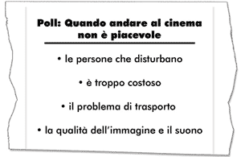
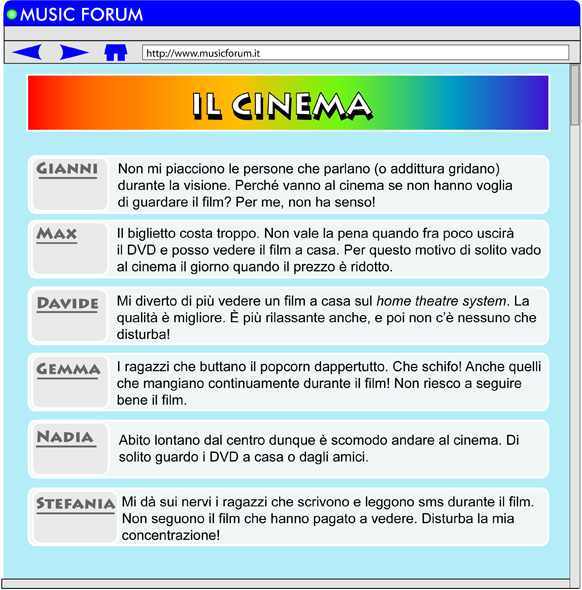

È bello andare al cinema con gli amici.
Ma a volte non è così piacevole! Perché?
A teenage magazine is running a poll to find out the reasons why.
The following have been identified as some negative aspects of going to the cinema.
Teenagers are invited to post their comments on the forum.
Let’s look at some postings by teenagers on the subject.
Partecipa anche tu nel poll.
What do you least like about going to the cinema?
Respond to the poll and join in the forum above.
You may also want to ask your friends and post their response on the forum.
Esercizio 1
The following are the reasons given by the teenagers in the poll. Which ones relate to the reason expressed by the teenagers who participated in the forum? Write the names of the teenagers next to the reason.